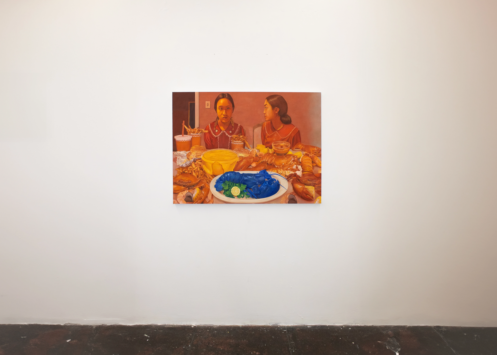

L. Song Wu's solo exhibition OUT IN THE OPEN at New Image Art is a body of four paintings that collapses a decadent seafood mukbang, impossible skydivers, unsettling voyeurs, and a cinematic frame into a single viewable room.
Weaving between enclosed and open spaces, the figures in Wu's work feel impossible and impenetrable, elusive in both their singularity and doubleness, nakedness and exposure.


OUT IN THE OPEN pushes Wu's exploration of instability in both viewer-subject and subject-subject relationships. Through these dim interiors, bright, open expanses, and modified self-portraits, Wu aims to capture the moments before an inflection point.
In OUT IN THE OPEN, Wu compels the viewer to question their participation and sense of belonging, blurring the lines between the spectacle and the spectator, the invited and the intrusive.